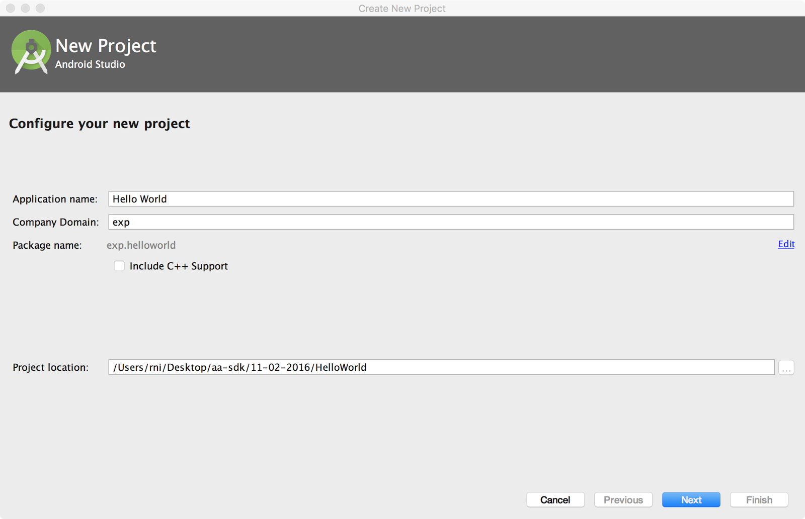
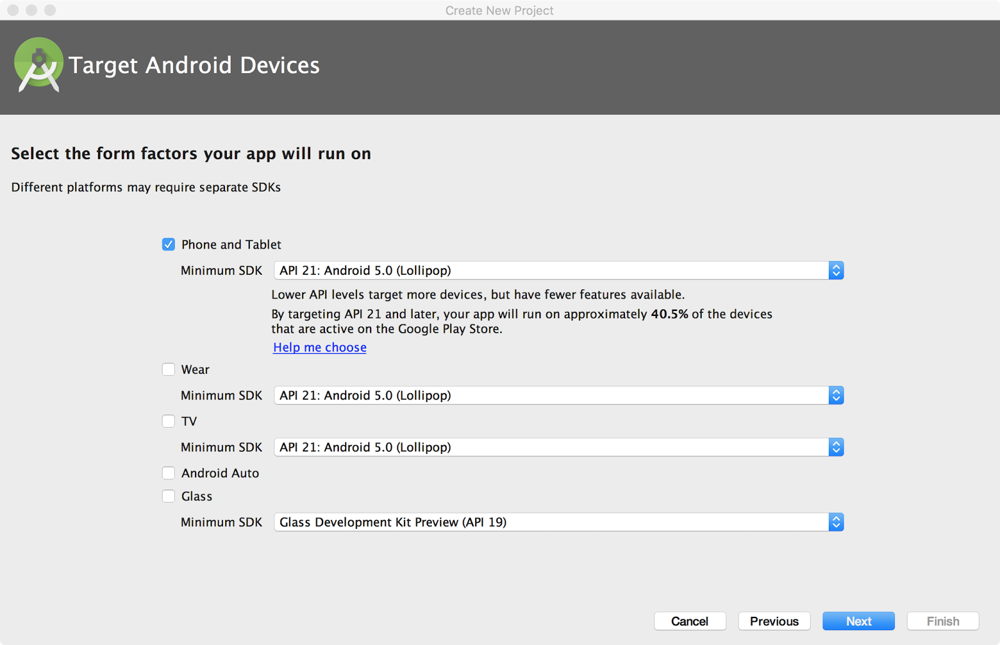
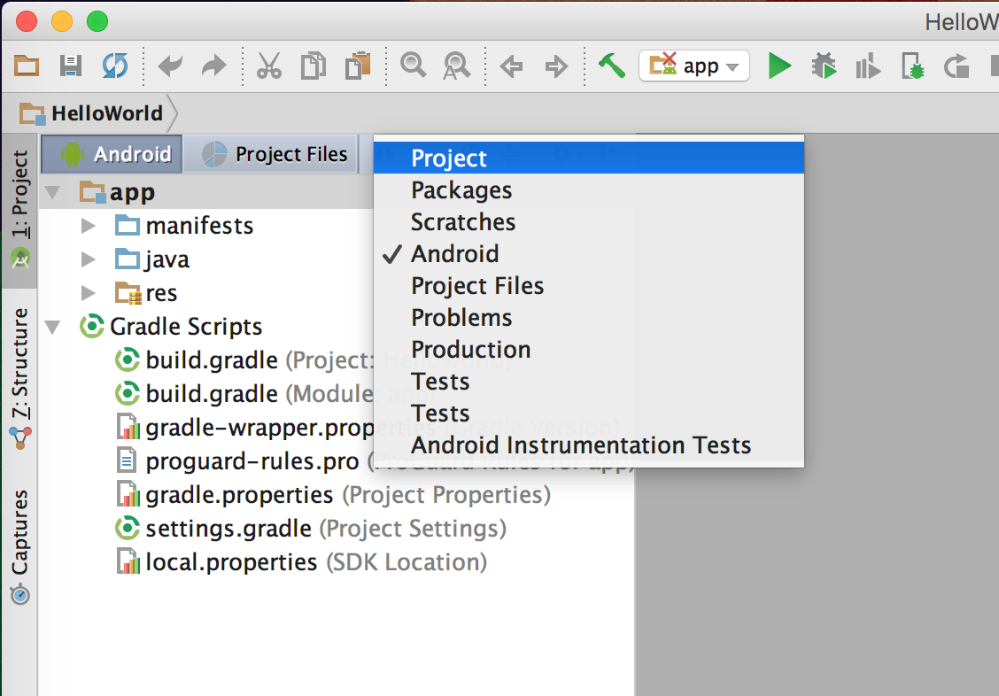
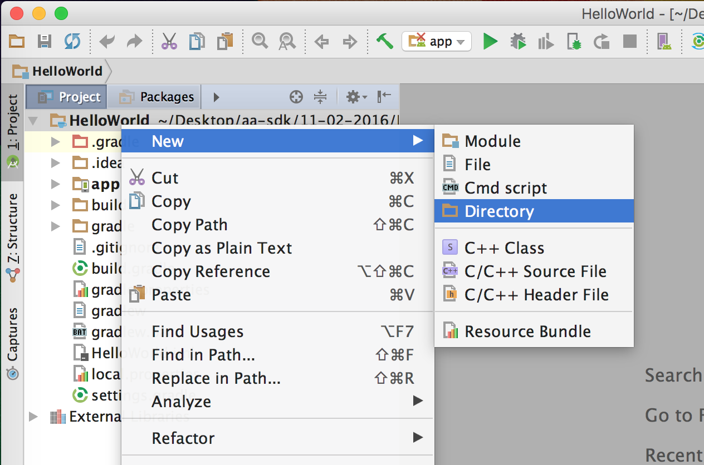

Start off by unzipping the sdk zip file provided.
$ unzip android-auto-sdk.zip
Install the pre-release applications on your phone.
$ adb install -r 11-02-2016/arm64/gearhead_release.apk
Test your installation with Desktop Head Unit by using the instructions here (you should see Android Auto start up successfully).
Set up a new project in Android Studio
Start with a new project

Select API 21 or above for the min SDK level. On the next screen, do not target Android Auto explicitly (this is currently only for media and messaging apps).

On the next screen, don't add an activity. Proceed to finish the wizard as usual. This should create an empty project for you to work with.
Set the toolchain to use Java 1.8
To compile an application for Android Auto, your toolchain needs to understand Java 1.8. This does not necessarily mean the final binary needs to be Java 1.8 bytecode, but it must be 1.7 compatible. We set up our project to be that way by modifying our gradle to do so:
compileSdkVersion 23
buildToolsVersion "24.0.1"
defaultConfig {
...
jackOptions {
enabled true
}
compileOptions {
sourceCompatibility JavaVersion.VERSION_1_7
targetCompatibility JavaVersion.VERSION_1_7
}
}Set up the .aar dependencies
Start off by creating a libs folder that you will need to put the aar files into. You can create a folder right in Android Studio by switching to the Project view.

Now you can create a new directory from there.

Add in android-support-car.aar, gearhead-sdk-ui.aar, and gearhead-sdk.aar by copying them into the newly-created libs directory. Now you are ready to update your build files to reference these new libraries.
Next, in your app build.gradle file, reference the libraries. You can do this by adding a repositories section and changing the dependencies section to look like this:
repositories {
flatDir {
dirs '../libs'
}
}
dependencies {
compile fileTree(dir: 'libs', include: ['*.jar'])
compile(name:'gearhead-sdk', ext:'aar')
compile(name: 'gearhead-sdk-ui', ext: 'aar')
compile(name:'android-support-car', ext:'aar')
androidTestCompile('com.android.support.test.espresso:espresso-core:2.2.2', {
exclude group: 'com.android.support', module: 'support-annotations'
})
compile 'com.android.support:appcompat-v7:25.0.1'
compile 'com.android.support:design:25.0.1'
testCompile 'junit:junit:4.12'
}Android Studio will now ask you to sync your project. After you sync your project the build should complete successfully. You are now done with your build environment and you should be able to move on to writing code for your application.